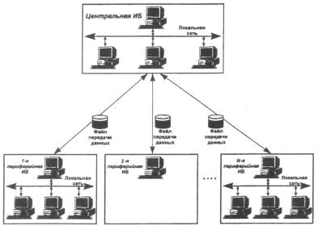

Распределенная информационная база состоит из центральной информационной базы и произвольного числа периферийных информационных баз. Передача изменений производится посредством файла переноса данных.
 Списки пользователей ведутся в каждой И Б независимо.
Центральная информационная база - это единственная точка, где может модифицироваться конфигурация и откуда может осуществляться управление структурой распределенной информационной базы (составом входящих в нее периферийных информационных баз). Изменения данных (ввод и модификация документов, работа со справочниками и т.д.) могут производиться на любой ИБ распределенной информационной базы. Для синхронизации информационных баз между периферийными и центральной ИБ периодически производится перенос измененных данных. Периферийные ИБ, участвующие в процессе обмена данными, должны быть созданы на основе центральной ИБ (см. раздел «Создание образа периферийной ИБ») - в противном случае файл передачи данных компонентой обработан не будет.
Существует специальная возможность с . кия для периферийной ИБ признака «Только получатель», с этом случае будет выполняться перенос данных в периферийную информационную базу, но обратный перенос данных (из этой ИБ в центральную) выполняться не будет. Периферийные информационные базы с признаком «Только получатель» используются в специальных случаях. Например, чтобы иметь постоянно поддерживаемую в актуальном состоянии копию центральной ИБ, с возможностью внесения в нее любых изменений.
Перенос данных происходит «пообъектно», то есть единицей переноса информации является «ведущий» объект, документ, элемент справочника, константа. При использовании компоненты «Бухгалтерский учет» к таким объектам добавляются бухгалтерский счет, типовая операция, список корректных проводок (список корректных проводок, фактически, является одним объектом и при их изменении обновляется целиком). При использовании компоненты «Расчет» «ведущими» объектами также становятся календари (каждый календарь является самостоятельным «ведущим» объектом). Вместе с документом также переносятся все действия, которые он выполняет в процессе проведения: движения регистров, акты расчета, изменения в справочниках, бухгалтерские операции. При изменении в центральной информационной базе самой конфигурации системы в процессе переноса данных происходит также автоматическая реструктуризация данных во всех периферийных информационных базах.
При конфигурировании системы для различных видов объектов может быть определена область миграции: указаны те информационные базы, в которые должны попадать конкретные экземпляры объектов данного вида в зависимости от места их создания. Например, доверенности могут не участвовать в переносе информации, так как они обычно используются только "по месту выписки". Многие документы имеет смысл переносить только на центральную информационную базу для получения консолидированной отчетности. Каждая ИБ автоматически ведет внутренний список изменений "ведущих" объектов, постоянно пополняя его. В выгружаемый файл также помещается информация о загруженных изменениях объектов. При загрузке ИБ определяет, какие изменения приняты ее корреспондентом, и удаляет их пз списка изменений. Кроме обычного автоматического способа регистрации изменений ведущих объектов существует возможность управлять включением объекта в список измененных. Управление выполняется средствами встроенного языка и используется в специальных случаях. Например, с помощью такого управления можно исключить передачу изменений объекта, выполненных специальной обработкой, если они заведомо имеют смысл только в данной информационной базе. Реализация механизма передачи данных между ИБ обеспечивает корректную синхронизацию информационных баз в случаях, когда нарушается порядок загрузки файлов переноса данных, и даже в случае потери части выгрузок. Однако этот механизм подразумевает обмен файлами переноса данных в обоих направлениях, так как до тех пор, пока от ИБ, для которой производилась выгрузка, не вернется подтверждение приема изменений, ИБ, производившая выгрузку, будет включать, возможно, уже принятые изменения в каждый последующий файл переноса данных, что будет увеличивать размер файла.
При работе распределенной системы с периодическим обменом данными могут возникать спорные ситуации (коллизии). Ниже дан перечень коллизий и алгоритмы их разрешения системой. Эту информацию следует иметь в виду при создании новой конфигурации и при проведении организационных мероприятий по внедрению распределенной ИБ на базе системы 1С:Предприятие.
Только после того, как все ИБ системы, которые поддерживают синхронизацию «ведущего» объекта, подтвердили его прием, информация о его изменении удаляется системой, и процедура корректировки распределенной ИБ заканчивается. Если же в течение этого промежутка времени другая ИБ внесла в объект свои изменения, то такие корректировки можно считать условно одновременными. Коллизии могут возникать при условно одновременном изменении «ведущего» объекта двумя или более ИБ единой распределенной информационной базы.
|
Коллизия |
Алгоритм |
|
Один и тот же объект изменен более чем в одной ИБ |
Если одна из ИБ - центральная, то определяющими считаются изменения, сделанные в ней. В периферийных ИБ состояние объекта при следующей выгрузке-загрузке будет приведено в соответствие с центральной. В противном случае определяющими считаются изменения, дошедшие первыми до центральной ИБ. |
|
Объект, удаленный в одной из ИБ, не может быть удален в другой, так как в другой ИБ на пего имеются ссылки |
По окончании процедуры корректировки распределенной ИБ объект будет восстановлен всеми ИБ, поддерживающими его синхронизацию. |
|
Объект, измененный в одной ИБ, был удален в Другой |
Определяющим действием считается изменение. По окончании процедуры корректировки распределенной ИБ объект в измененном виде будет восстановлен всеми ИБ, поддерживающими его синхронизацию. |
Значение на определенную дату периодического реквизита справочника или счета, а также значение периодической константы не является «ведущим» объектом: ими могут быть только константа, элемент справочника, счет, вместе со всей историей изменения периодических реквизитов. Поэтому, при условно одновременном изменении периодической константы, элемента справочника, счета, по окончании процесса корректировки распределенной ИБ принятым окажется только одно изменение, даже если корректировка периодического значения производилась для разных дат.